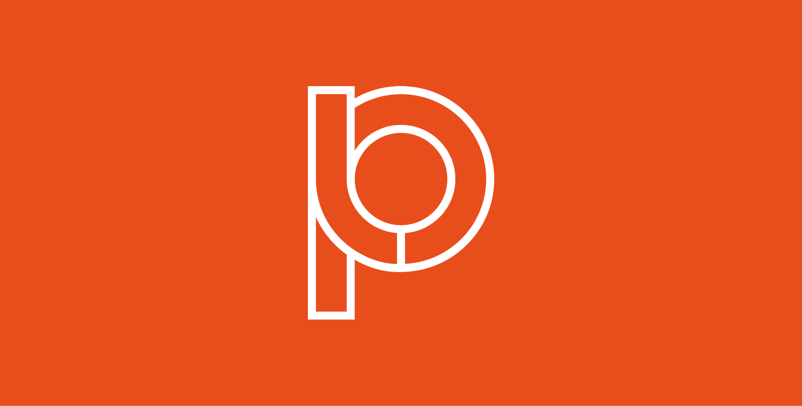

← Back to home
In the Loop
Date: 2023 • Timeline: 3 Months
The Challenge
Digital news consumption is fragmented, fast-paced, and often emotionally exhausting. Users are inundated with constant updates, breaking alerts, click-driven headlines, and algorithmically prioritised content that encourages habitual “doom-scrolling” rather than meaningful engagement.
The challenge was to reimagine how people interact with daily news and shifting the experience from overwhelming and reactive to one that is intentional and considered. Rather than simply redesigning an interface, the task required questioning why users engage (or disengage) with news in the first place.
How might we:
- Reduce cognitive overload while preserving depth and credibility?
- Encourage informed reading instead of passive scrolling?
- Create an experience that feels trustworthy, calm, and purposeful?
- Present content in a way that revitalises interest in digital news platforms?
Branding
Logo generation
With the logo I really wanted to lean into "loop" and exploring that visually. I came up with several ways to incorporate it and it took a life of it's own which led to the final logo and wordmark.